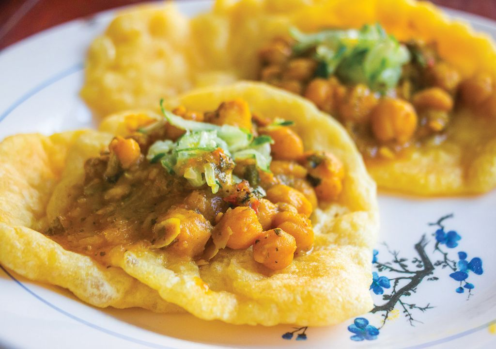

Delicacy

Doubles are a staple in the island nation of Trinidad and Tobago.
Doubles is a common street food originating from Trinidad and Tobago.
It is normally eaten during breakfast, but is also eaten occasionally
during lunch or as a late night snack and popular hangover food for local
Trinidadians.Doubles are made with two baras (flat fried dough) and
filled with curry channa (curried chickpeas) and various chutneys.Hearty
chickpea curry, called channa, scented with garlic and onion, curry powder
and cumin fills out the sandwich. Pepper sauce, mango pickle, and tamarind
are the condiments of choice. Ideally you’d use them all at once; a balance
of heat, sour, and sweet.
Special
Green seasoning
To make green seasoning a large shallots, peeled and coarsely chopped minced
fresh chives minced fresh thyme stemmed and chopped flat leaf parsley or cilantro
leaves onion, peeled and coarsely chopped garlic chpped small, ground black pepper
salt, white vinegar and however many pepper you can take.
Pepper Sause
Most homes have a super spicey pepper sause made from scratch. It's
used to eat with everything. The sause can vary in taste and spice level.
Most family use habaneros but some chose to use extreme heat with use of
Trinidad scorpion Butch T pepper
Sweet sause
The sweet sause is for dessert which is made from suger cane and condence milk.This
is most used on cakes or snowcones.
Chutney
A spicy condiment made of fruits or vegetables with vinegar, spices, and sugar.